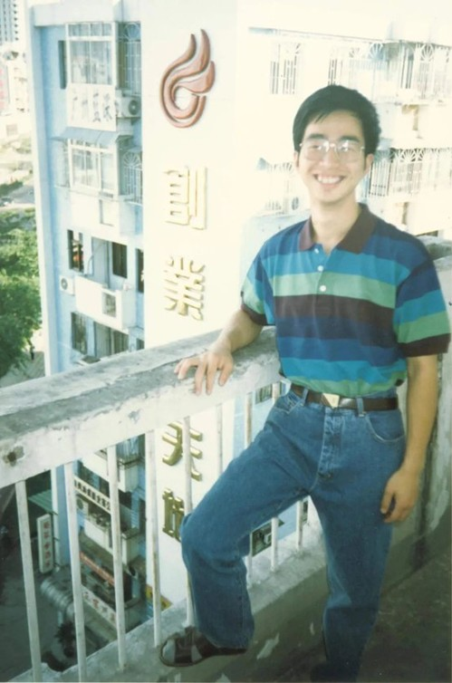

沈浩，上海帜讯信息技术股份有限公司 CEO
在介绍自己入学年份时，沈浩便将那段难忘的军训时光娓娓道来。作为90年第一届“军三届”的学生，刚入学，面临的便是为期一年的军训生活。期待着在军校里挥洒汗水、磨炼意志，但迎来的却是更多的政治和军事理论学习。对此，沈浩笑着说：“期望中高强度的体能训练被取消了，起初挺失落的。有些同学甚至已经开始提前学习数学分析，那时候自己感到有些迷茫，不知道这一年里能做些什么了。”但他并没有让自己停留在焦虑中，而是开始以军校的标准要求自己，从站好一个军姿到唱好一遍军歌，从未懈怠。
对于沈浩而言，军校的生活是复旦带给他的第一课。让他意识到，优秀不止于学业，而是在各种环境和变化中，都能积极行动，保持坚定的信念和内在的稳定，全力以赴做到完善，无论是在军营、学校，抑或是在未来的创业途中。
01 创业伊始，乘风破浪
在沈浩的印象里，九十年代复旦计算机系的老师既是科研高手，也是投身市场的“多面手”，张根度老师的“复旦网络”、张世永老师的“复旦光华”都是行业内响当当的品牌，因此，学习和创业并不是相互矛盾的事情，相反，可以很好地融合。
大三第一学期，沈浩便得到了一次实践的机会——在一位89级计算机系师兄的推荐下，为申银证券公司开发证券交易系统。抱着试试看的心态，沈浩开始在年级里“招兵买马”，很快就组建了一支专业能力数一数二的团队。当时正临近期末，八个人一头准备考试，一头又没日没夜地扎进项目的准备之中。考试结束后，依旧每天五六点起床，工作到凌晨两三点。对于沈浩来说，这是自己负责的第一个真实交付的商业项目，当看到自己开发的系统上线，申银还专门为此成立了网络公司进行销售时，一种欣喜和自豪感油然而生，创业的意义便在于理想照进现实的那一瞬。
九十年代是计算机行业高速发展的时代，其时，专业人才依旧稀缺。研究生期间，在认真完成学业之余，沈浩依旧决定将三分之二的时间投入到了创业实践中，一方面出于一种行业发展的时代推动力，一方面也来源于使命感——用自己的专业真正帮助客户解决问题。他先是担任了一家香港公司驻上海办事处的负责人，从找办公室、组建团队、负责上海的业务，到成为IBM的合作伙伴，参与一些项目的合作投标都亲力亲为。当然，平衡学习和兼职也并非易事。沈浩回忆，当自己经常半夜回到宿舍开始做作业，第二天还要上课、工作。全身心的投入和坚定的意志也让沈浩迅速成长起来，研三时，他帮助一家面临倒闭的电脑公司重新梳理团队，更高效创新的完成项目，最终让公司在第二年扭亏为盈。

尚未走出校园，沈浩已然可以独当一面。对他来说，离开复旦后选择创业是一种对自我的期许，是一种去不断地迎接挑战的复旦精神的延续。“复旦为我们提供了一个很好的成长平台，然而离开校园后还是需要一直勇往直前的。复旦人不应该有什么后顾之忧，要去不断突破自己的边界，不断寻找机会。”沈浩如是说。
02 “创新路上，没有现成的解决方案。”
1997年1月，沈浩注册了一家自己的公司，开始了人生第一段真正意义上的创业。公司帮助头部企业进行网络建设和更新，也尝试过软件领域的各种模式。2002年底，沈浩想要回到产品研发本身，做一些更富有创新性的软件产品。通过谷歌上的检索，沈浩发现当时关于彩铃技术仅有一条搜索记录，来自韩国最早的彩铃业务提供者，于是，他决定在国内的电信领域做出对标的彩铃产品。2003年5月，产品顺利在浙江联通开展线网调试，与此同时，华为也在调试同样的彩铃产品。由于当时的行业壁垒（运营商倾向于会选择大公司），沈浩不得不面临着“产品做出来了，却卖不出去”的难题，几经辗转，最终他找到另一家电信行业巨头——上海贝尔阿尔卡特进行销售，顺利打通了产品到市场的路。
不久，沈浩又萌生了新的想法：开发能够对通讯网络进行改造的新产品，让它变得更加智能化，不仅能打电话，还能有更多的增值业务。当沈浩兴致勃勃地提出方案时，迎接他的却是一盆冷水，传统设备厂商并不愿意将投入转移到对网络的改造上。现实和不断创新的理想之间，始终横亘着一道鸿沟。当时的软件产业对创新的要求和包容度都并不高，创新在一些市场垄断下也很容易受到压制，许多想法都难以付诸实践。
面对瓶颈，沈浩选择暂时放下自己的第一段创业之旅，入职阿尔卡特。在阿尔卡特的四年，每一年都面临着新的岗位和新的挑战，从副职到专网集团的战略总监，独立负责一个业务团队，从国内市场到亚太市场的开拓，沈浩坦言，在阿尔卡特的工作经历打开了他的视野，让自己收获了更具前瞻性的理念，从全行业的视角去发现软件和通讯行业更多的可能性，也看到了时代洪流下传统通讯产业所遭遇的互联网的挑战。
“创业就是走自己没有走过的路；如果是创新领域，更是他人没有走过的路。因此，创新里面没有现成的解决方案，只能坚持往前走，推开一扇扇门，找到那个答案。”对沈浩来说，创业的念头从未离他而去，在阿尔卡特的四年，让他有了更开阔的视野和认知，如今的他，能否继续发挥自己的想法，用软件创造价值？
03 八面来风，驾舟而行
离开阿尔卡特，沈浩创立了帜讯信息技术股份有限公司。在To C和To B之间，帜讯信息选择了后者，利用通讯大数据、人工智能和新型信息化技术为企业提供移动信息化服务，帮助企业进行业务创新和提升效率。
然而，创业的路也并非一帆风顺。2011年，公司的一个产品在湖北完成业务试点，准备推向全国时，沈浩才发现每个省、甚至每个部门的想法都各不相同，拓展业务困难重重，有时拓展一个省就要花半年的时间。这让他开始思考，在合作过程中，如何去快速适应不同的合作伙伴？答案是实现一种生态合作。沈浩多次提到，每家企业都有自己的强项，公司要交付的不是一种同质性的产品，或是去改变企业，而是要帮助企业在现有的通讯网络上嫁接一些创新的业务，而这一切，需要建诸对市场一致的认识、目标和方案，打破甲方、乙方的传统理念，从而形成一个紧密联系的团队。秉持着这样的理念，在这场“长征”花费了三四年时间，最终，帜讯的产品成功在全国二十几个省铺展开来。
为了解决企业项目定制效率低的问题，帜讯也不断进行着自己的模式创新，提出了“大规模定制”的模式——为每个定制的场景找到一定规模数量的企业客户，把企业场景所需要的基础服务打造成底座、引擎，通过一些自动化的工具、配置来做场景开发，细分领域去复制场景，从而提高企业效率，并通过生态合作，提高服务的专业化。后来，这一理念也被编写进阿里巴巴前首席架构师钟华撰写的《数字化转型的道与术》一书中，系统化为一套数字化转型的方法学。
新的挑战远不止于此，面对互联网在企业市场宣布免费的市场策略，帜讯的商业模式也不可避免地遭到冲击。然而，沈浩坚信，生态合作、共同创造“1+1＞2”的价值理念一定会带来自己的优势和机遇。正如他所说，各个环节都会有挑战，信念有时候更为重要。对价值的认定是沈浩不断前行的支撑，只要坚定信念，积极行动，终会迎来豁然开朗。
04 “一个远景，让道路变得更加坚实。”
如果说，信息是需要被传递的消费品，那么5G消息就是在通向千行百业的高速公路上信息和数字化服务的载体。随着5G消息业务的推出，5G、大数据、人工智能，组成了信息化的新基建。帜讯信息也在不断通过为企业提供5G消息服务来实现产品研发的同步升级，沈浩相信，线上的服务将不再只是互联网企业的专利，通过5G消息铺设的平台，全媒体渠道的触达可以帮助传统企业构建起更多数字化服务，打通线上、线下的服务，增强竞争力，加速企业转型，从而更好地服务它们的C端客户：对于医疗行业来说，医生可以通过手机端做随访，查看不同患者的治疗效果和恢复程度；在汽车行业中，通过5G消息，可以直接在手机端信息页面为用户展示产品的数字空间，沉浸式的品牌故事、车型的全景欣赏和个性化的互动体验……
如何用好5G网络，未来还有无限的想象和拓展的可能，对沈浩而言，这又将是一个充满挑战与机遇的空间。元宇宙给出了未来数字化的全景，而5G网络是数字化时代基础的承载体。时代未来的方向最终通向哪里，也许会有很多条路，但有了目标和远景，脚下的路才会变得更加坚实。沈浩相信，“一个长远的、更具有挑战性的、更有价值的目标，永远值得你的团队不断地燃起使命感并为之奋斗。”
（5G交互信息真实界面）
作为复旦IT同学会副会长，沈浩也参加了许多校友会举办的活动，他坦言，自己非常愿意分享自己对事业的理念，帮助复旦的学子拓展视野，鼓励同学们不断打破天花板，发挥自身的价值。IT行业技术迭代飞快，在沈浩看来，对于计算机领域的同学而言，首先要做的便是清空自己，站在客户的角度真正地理解问题，从而解决问题。其次，走出校园，更重要的是具备问题导向的跨专业学习能力，IT是特别广泛的技术，想要帮助客户解决问题，往往需要我们在实践中不断学习、更新、应用跨领域的知识。当然，还要学得和优秀的人合作。
驾舟而行，总有八面来风——生活无时无刻不充满着机遇和挑战。如沈浩所说， 当互联网公司冲击市场，当产业面临数字化转型新机遇，其时，没有一个先例，也没有一个可以参考的历史解决方案，而面对这些挑战，你只能坚持往前走。超出预期的问题难免让人一时迷茫慌乱，而这时，最可贵的是依旧能够坚守那份对自我的期许，心怀天海，积极行动，去度过每一次风浪。
本文作者：复旦大学中文系学生 王瑞琳
文章来源：上海复旦大学校友会